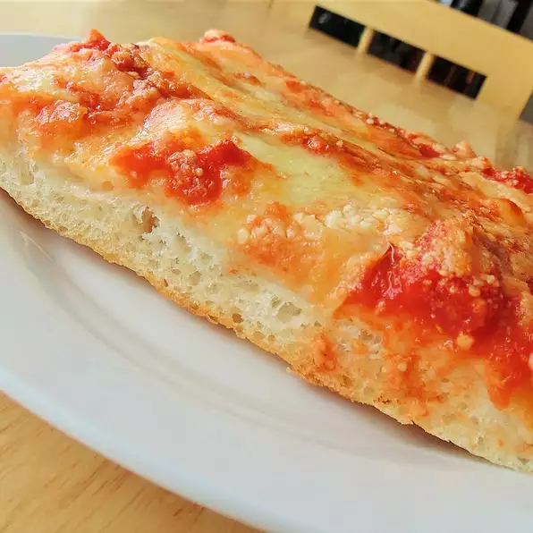

Return to the recipes list
Pizza recipe

Description:
This pizza recipe will make you feel like being in a trip to Sicily.
Ingredients:
- 1 tablespoon vegetable oil
- 200g of cheese
- 150g of tomato's sauce
- 300g of dough
- 2 basil leafs
Steps:
- Step 1: Combine water and yeast in a small bowl. Let stand until yeast softens and begins to form a creamy foam, about 5 minutes.
- Step 2: Combine flour and salt together in the bowl of a stand mixer fitted with a dough hook attachment. Pour in yeast mixture. Knead dough until smooth, about 7 minutes.
- Step 3: Grease a large bowl lightly with olive oil. Form dough into a tight ball and lightly grease the top. Place in the bowl; cover loosely with plastic wrap. Let rise until doubled in volume, about 30 minutes.
- Step 4: Mix crushed tomatoes and pizza sauce together in a bowl to make sauce.
- Step 5: Grease a heavy-gauge rimmed 12x17-inch baking sheet generously with olive oil. Press dough into the bottom. Prick dough all over with a fork. Arrange mozzarella cheese slices over dough; cover with 1 cup sauce. Sprinkle Pecorino Romano cheese on top. Drizzle remaining olive oil over pizza.
- Step 6: Let pizza rise in a warm area until puffy, about 1 hour.
- Step 7: Preheat oven to 450 degrees F (230 degrees C).
- Step 8: Bake pizza on the center rack of the preheated oven until edges are very dark brown but top is not burnt, 15 to 20 minutes. Cool in the pan for 5 minutes before slicing into squares.